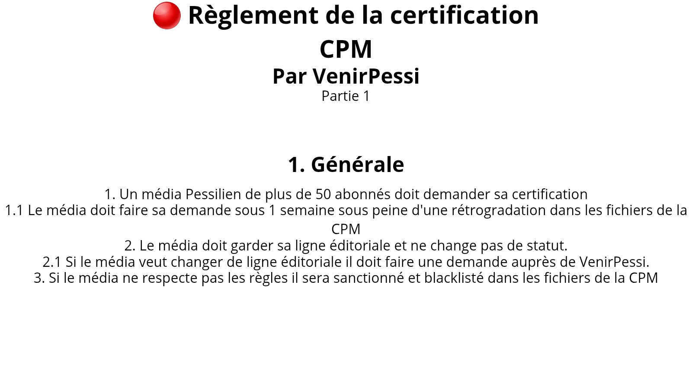
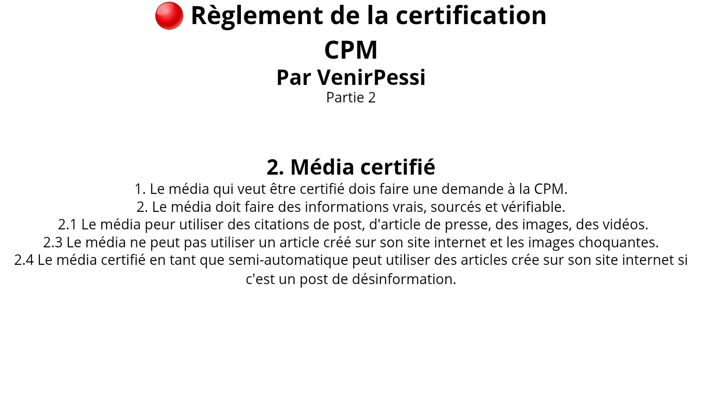
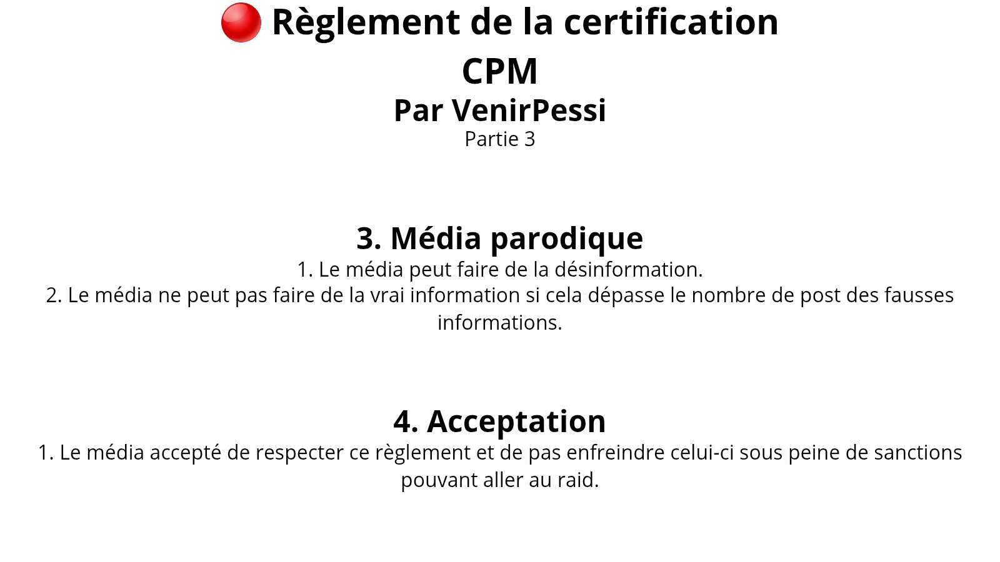

La CPM est une certification visant à protéger les informations Pessiliène de la désinformation.
Ces certifications ne sont pas officielle par X mais garde une importance.
Voici les 2 certifications :
Voici le règlement de la CPM :
   Aller dans les archivesMerci d'avoir regardé !
← Retour à l'accueil